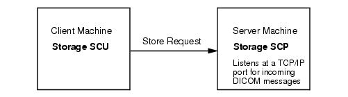

The Storage SCU functionality of the DICOM Network Services utility transmits DICOM files from the local DICOM Storage SCU (Service Class User) to a remote destination that is identified as a DICOM Storage SCP (Service Class Provider). This sends a copy of the images to the file storage machine, leaving the original image data intact.

Flow of Data in a Storage Operation
The IDL Storage SCU functionality typically sends a DICOM file using the file's current transfer syntax. IDL detects, during the association negotiation, whether or not the remote Storage SCP server can accept the file's current transfer syntax. If the remote Storage SCP cannot accept the current transfer syntax the file's transfer syntax is changed to Implicit VR or Explicit VR and then sent to the remote node. The original file on disk remains unchanged. JPEG Lossy files are not converted to Implicit VR or Explicit VR files because the user at the remote end could be mislead into thinking that the file contains lossless data.
Note: The required Storage SCU tab is not available if you start the DICOM Network Services utility with the SYSTEM keyword.
To send files to a remote machine, see the following topics: